Ejercicios
1. Un objeto se mueve con una rapidez constante de 6 m/s. Esto significa que el objeto:
- Aumenta su rapidez en 6 m/s cada segundo
- Disminuye su rapidez en 6 m/s cada segundo
- Tiene una aceleración positiva
- Se mueve 6 metros cada segundo
- No se mueve
2. Un automóvil de juguete se mueve 8 m en 4 s con una velocidad constante. ¿Cuál es la velocidad el automóvil?
- 1 m/s
- 2 m/s
- 3 m/s
- 4 m/s
- 5 m/s
3. Un tren se mueve con una velocidad constante de 50 km/h. ¿Qué tan lejos habrá llegado después de 0,5 h?
- 10 km
- 20 km
- 25 km
- 45 km
- 50 km
4. Un bote puede moverse a una velocidad constante de 8 km/h en aguas calmas. ¿Cuánto tiempo le tomará al
bote recorrer 24 km?
- 2 h
- 3 h
- 4 h
- 6 h
- 8 h
5. En el diagrama se muestra una diapositiva de los tres automóviles de carrera. Los tres automóviles pueden
comenzar la carrera en el mismo momento y lugar, y avanza por una pista recta. A medida que se acercan a la
línea de llegada, ¿qué automóvil tiene la menor rapidez promedio?
- Automóvil I
- Automóvil II
- Automóvil III
- Los tres automóviles tienen la misma rapidez promedio
- Se necesita más información
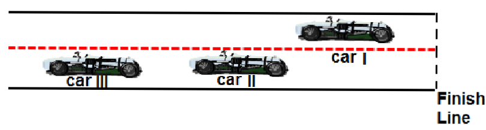
6. Un ciclista se mueve con una rapidez constante de 4 m/s. ¿Cuánto tiempo le tomará al ciclista recorrer 36 m?
- 3 s
- 6 s
- 12 s
- 9 s
- 18 s
El gráfico representa la relación entre velocidad y tiempo para que un objeto se mueva en línea recta. Utilice este gráfico para responder las preguntas 7 y 8.
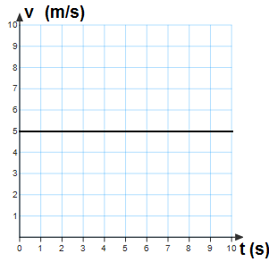
7. ¿Cuál de los siguientes enunciados es verdadero?
- El objeto aumenta su rapidez
- El objeto desacelera
- El objeto se mueve con una velocidad constante
- El objeto se mantiene detenido
- El objeto experimenta una caída libre
8. ¿Cuál es la velocidad del objeto después de 5 s?
- 1 m/s
- 2 m/s
- 3 m/s
- 4 m/s
- 5 m/s

9. El gráfico representa la relación entre velocidad y tiempo para que un objeto se mueva en línea recta. ¿Cuál es la distancia que recorrió el objeto después de 9 s?
- 10m
- 24m
- 36m
- 48m
- 56m
El siguiente gráfico representa la posición como una función de tiempo para un objeto en movimiento. Utilice este gráfico para responder las preguntas 10 y 11.
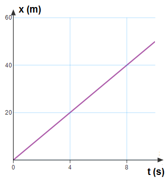
10. ¿Cuál de los siguientes enunciados es verdadero?
- El objeto aumenta su velocidad
- El objeto disminuye su velocidad
- La velocidad del objeto se mantiene sin cambiosLa velocidad del objeto se mantiene sin cambios
- El objeto se mantiene detenido
- Se necesita más información
11. ¿Cuál es la velocidad del objeto?
- 4 m/s
- 20 m/s
- 8 m/s
- 40 m/s
- 5 m/s
El siguiente gráfico representa la posición como una función de tiempo de un objeto en movimiento. Utilice este gráfico para responder las preguntas 12 y 13.
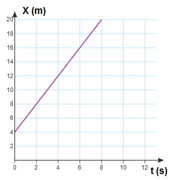
12. ¿Cuál es la posición inicial del objeto?
- 2 m
- 4 m
- 6 m
- 8 m
- 10 m
13. ¿Cuál es la velocidad del objeto?
- 2 m/s
- 4 m/s
- 6 m/s
- 8 m/s
- 10 m/s
El siguiente gráfico representa la posición como una función de tiempo de un objeto en movimiento. Utilice este gráfico para las preguntas 14 y 15.
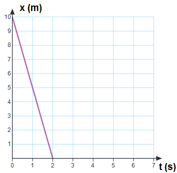
14. ¿Cuál es la posición inicial del objeto?
- 2 m
- 4 m
- 6 m
- 8 m
- 10 m
15. El gráfico representa la posición como una función de tiempo de un objeto en movimiento. ¿Cuál es la velocidad del objeto?
- 5 m/s
- -5 m/s
- 10 m/s
- -10 m/s
- 0 m/s
16. ¿Cuál de los siguientes es una cantidad de vector?
- Rapidez
- Tiempo
- Distancia recorrida
- Velocidad
- Área
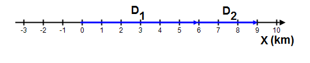
17. Comenzando desde el principio, una persona camina 6 km al este durante el primer día y 3 km al este el día siguiente. ¿Cuál es el desplazamiento neto de la persona desde el punto de partida en dos días?
- 6 km, oeste
- km, este
- 10 km, este
- 5 km, oeste
- 9 km, este
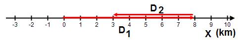
18. Comenzando desde el principio, una persona camina 8 km al este durante el primer día y 5 km al oeste el día siguiente. ¿Cuál es el desplazamiento neto de la persona desde el punto de partida en dos días?
- 6 km, este
- 3 km, este
- 10 km, oeste
- 5 km, oeste
- 9km, este
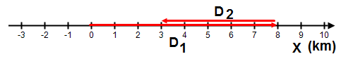
19. Comenzando desde el principio, una persona camina 8 km al este durante el primer día y 5 km al oeste el día siguiente. ¿Cuál es la distancia que recorrió la persona desde el punto de partida en dos días?
- 13 km
- 3 km
- 10 km
- 5 km
- 9 km
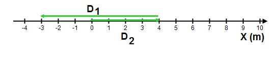
20. Comenzando desde el principio, un automóvil recorre 4 km al este y luego 7 km al oeste. ¿Cuál es el desplazamiento neto del automóvil desde el punto de partida?
- 3 km, oeste
- 3 km, este
- 4 km, este
- 7 km, oeste
- 7 km, este
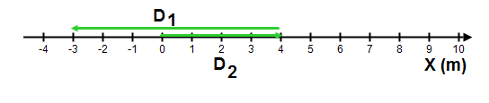
21. Comenzando desde el principio, un automóvil recorre 4 km al este y luego 7 km al oeste. ¿Cuál es la distancia que recorrió el automóvil desde el punto de partida?
- 3 km
- 3 km
- 4 km
- 7 km
- 11 km
22. Un objeto se mueve con una aceleración constante de 5 m/s2. ¿Cuál de los siguientes enunciados es verdadero?
- La velocidad del objeto se mantiene sin cambios
- El objeto se mueve 5 m cada segundo
- La aceleración del objeto aumenta 5 m/s2 cada segundo
- La aceleración del objeto disminuye 5 m/s2 cada segundo
- La velocidad del objeto aumenta 5 m/s cada segundo
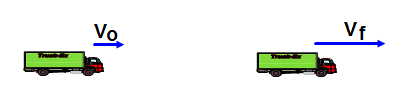
A la derecha se muestra el gráfico de posición versus tiempo de un objeto en movimiento. Utilice este gráfico para responder las preguntas 26 a 30.
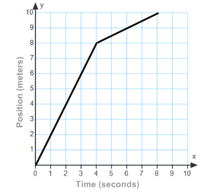
23. ¿Cuál es la rapidez promedio entre 0 s y 4 s?
- 0,5 m/s
- 1 m/s
- 8 m/s
- 40 m/s
- 2 m/s
24. ¿Cuál es la rapidez promedio entre 4 s y 8 s?
- 0.5 m/s
- 1 m/s
- 2 m/s
- 3 m/s
- 4 m/s
25. ¿Cuál es la posición del objeto a los 6 s?
- 2 m
- 1 m
- 3 m
- 7 m/s
- 9 m/s
26. ¿Cuál es la aceleración promedio entre 4 s y 8 s?
- 0 m/s2
- 1 m/s2
- 2 m/s2
- 3 m/s2
- 4 m/s2
27. Un automóvil y un camión de envíos comienzan desde un punto detenido y aceleran con la misma tasa. Sin embargo, el automóvil acelera durante dos veces la cantidad de tiempo que el camión. ¿Cuál es la rapidez final del automóvil en comparación con el camión?
- La mitad
- La misma
- El doble
- El cuádruple
- Un cuarto
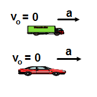
28. Un automóvil y un camión de envíos comienzan desde un punto detenido y
aceleran con la misma tasa. Sin embargo, el automóvil acelera durante dos
veces la cantidad de tiempo que el camión. ¿Cuál es la distancia que recorrió el automóvil en comparación con el camión?
- La mitad
- La misma
- El doble
- El cuádruple
- Un cuarto
29. Un automóvil moderno puede desarrollar una aceleración cuatro veces mayor
que un auto antiguo como el “Lanchester 1800”. Si aceleran durante la misma
distancia, ¿cuál será la velocidad del automóvil moderno en comparación con
el automóvil antiguo?
- La mitad
- La misma
- El doble
- El cuádruple
- Un cuarto
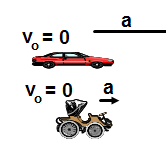
30. Un objeto deja de estar en reposo y cae en la ausencia de resistencia de aire. ¿Cuál de los siguientes enunciados es verdadero acerca de su movimiento?
- Su aceleración es igual a cero
- Su aceleración es constante
- Su velocidad es constante
- Su aceleración está aumentando
- Su velocidad está disminuyendo
31. Se arroja una pelota hacia arriba de forma recta desde el punto A, alcanza una altura máxima en el punto B y vuelve a caer al punto C. ¿Cuál de los siguientes enunciados es verdadero acerca de la velocidad y aceleración de la pelota en el punto más alto B?
- Su velocidad y aceleración son igual a cero
- Su velocidad aumenta, y la constante es diferente de cero y la aceleración es cero
- Su velocidad disminuye, y la constante es diferente de cero y la aceleración es cero
- Su velocidad es cero y la aceleración aumenta y la constante es diferente de cero
- Su velocidad es cero y la aceleración disminuye y la constante es diferente de cero
32. Una pelota, un disco de hockey y una pelota de tenis caen en la
ausencia de resistencia de aire. ¿Cuál de los siguientes
enunciados es verdadero acerca de su aceleración?
- La aceleración de la pelota es mayor que los otros dos
- La aceleración del disco de hockey es mayor que los otros dos
- La aceleración de la pelota de tenis es mayor que los otros dos
- Todos caen con la misma aceleración constante
- Se necesita más información
33. Un paquete se arroja dos veces desde un globo de aire. En el
primer intento, la distancia entre el globo y la superficie es H
y en el segundo intento 4H. Compara el tiempo que demora
que un paquete alcance la superficie en el segundo intento
con el primer intento.
- El tiempo en el segundo intento es cuatro veces mayor
- El tiempo en el segundo intento es dos veces mayor
- El tiempo es igual en ambos intentos debido a que no depende de la altura
- El tiempo en el segundo intento es cuatro veces menor
- El tiempo en el segundo intento es dos veces menor
34. Dos pelotas de béisbol se arrojan desde el techo de una casa con la misma rapidez
inicial, una se arroja hacia arriba y la otra hacia abajo. Compara la rapidez de las
pelotas de béisbol antes de que golpeen el piso.
- La que se arroja hacia arriba se mueve más rápidamente debido a que la velocidad inicial es hacia arriba
- La que se arroja hacia abajo se mueve más rápidamente debido a que la velocidad inicial es hacia abajo
- Ambas se mueven con la misma velocidad
- La que se arroja hacia arriba se mueve más rápidamente debido a que tiene una mayor aceleración
- La que se arroja hacia abajo se mueve más rápidamente debido a que tiene una mayor aceleración
35. Una pelota de tenis se deja caer desde el techo de un edificio alto. Otra pelota de tenis se arroja hacia abajo desde el mismo edificio. Escriba un enunciado acerca de la aceleración de cada pelota de tenis.
- La primera pelota cae con una mayor aceleración
- La segunda pelota cae con una mayor aceleración
- Ambas caen con la misma aceleración debido a que comenzaron desde la misma altura
- Ambas caen con la misma aceleración debido a que están en caída libre
- Se necesita más información
36. Un arquero que practica con un arco dispara una flecha de forma recta hacia
arriba dos veces. La primera vez la rapidez inicial es v0 y la segunda vez
aumenta la rapidez inicial a 4v0. ¿Cómo compararía la altura máxima en el
segundo intento con el primer intento?
- Dos veces mayor
- Cuatro veces mayor
- Ocho veces mayor
- Dieciséis veces mayor
- La misma
La velocidad como una función de tiempo de un objeto en movimiento se muestra en el gráfico que se encuentra a la derecha. Utilice este gráfico para las preguntas 43 a 48.
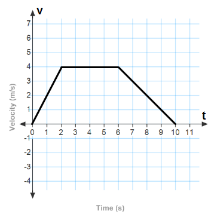
37. ¿Cuál es la aceleración del objeto entre los 0 s y los 2
s?
- 0 m/s2
- 1 m/s2
- 2 m/s2
- 3 m/s2
- 4 m/s2
38. ¿Cuál es la aceleración del objeto entre los 2 s y los 6
s?
- 0 m/s2
- 1 m/s2
- 2 m/s2
- 3 m/s2
- 4 m/s2
39. ¿Cuál es la magnitud de la aceleración del objeto
entre los 6 s y los 10 s?
- 0 m/s2
- 1 m/s2
- 2 m/s2
- 3 m/s2
- 4 m/s2
40. ¿Qué tan lejos del inicio se mueve un objeto en los primeros 2 s?
- 4 m
- 16 m
- 20 m
- 28 m
- 36 m
41. ¿Qué tan lejos del inicio se mueve un objeto en los primeros 6 s?
- 4 m
- 16 m
- 20 m
- 28 m
- 36 m
42. ¿Qué tan lejos del inicio se mueve un objeto en los primeros 10 s?
- 4 m
- 16 m
- 20 m
- 28 m
- 36 m
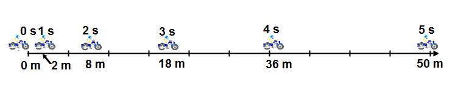
43. En el diagrama se muestra la posición y el tiempo transcurrido de una motocicleta. La motocicleta inicia desde su posición detenida y acelera con una tasa constante. ¿Cuál es la velocidad promedio de la motocicleta durante los primeros 5 s?
- 0 m/s
- 5 m/s
- 10 m/s
- 15 m/s
- 20 m/s
44. En el diagrama se muestra la posición y el tiempo transcurrido de una motocicleta. La motocicleta inicia desde su posición detenida y acelera con una tasa constante. ¿Cuál es la aceleración de la motocicleta?
- 0 m/s2
- 2 m/s2
- 4 m/s2
- 6 m/s2
- 8 m/s2